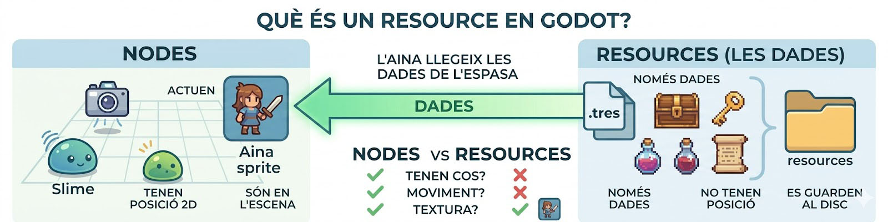
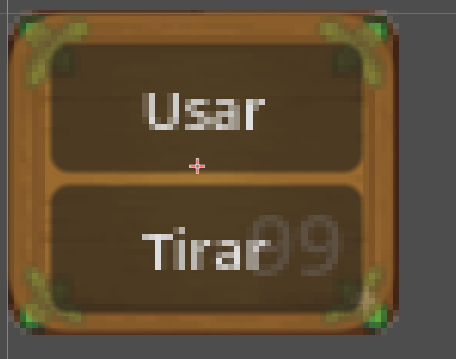
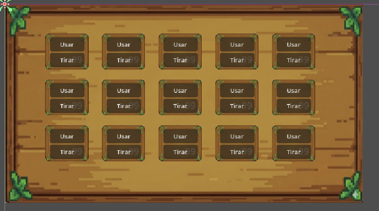

🎒 Lección 9: La Arquitectura de la Mochila
Bienvenidos a una de las lecciones más importantes del curso. Hasta ahora, Aina podía recibir daño, pero no podía guardar nada. Hoy aprenderemos a crear su mochila.
⚠️ Importante: En esta lección nos centraremos exclusivamente en el diseño visual y en la creación de datos. Dejaremos la mochila "lista y bonita", pero la "magia" para recoger objetos y usarlos la programaremos en la Lección 10. Dividir el trabajo nos permitirá entender mejor cómo Godot separa la imagen de la información.
1. ¿Qué es un Resource (Recurso) en Godot?
Hasta ahora hemos trabajado con Nodos (Aina, los enemigos, las cámaras). Los nodos son "cosas que hacen cosas": se mueven, colisionan o emiten sonidos. Pero, ¿dónde guardamos la información pura? Para eso sirven los Resources.
1. La analogía de la "Ficha de Personaje"
Imagina un juego de mesa:
- El Jugador es el Nodo: es quien mueve la pieza, tira los dados y está físicamente en la mesa.
- La Ficha de Cartulina es el Resource: es un papel donde está escrito el nombre, la fuerza y los objetos que lleva. La cartulina no "hace" nada, pero el jugador la necesita para saber quién es y qué tiene.
2. ¿Por qué no usamos Nodos para los objetos de la mochila?
Si tuviéramos 100 pociones en el suelo, y cada una fuera un nodo completo con física y código, el juego iría lento. En cambio, si esas 100 pociones solo son una "referencia" a un archivo de datos (Resource), el juego es mucho más ligero.
3. El archivo .tres (Text Resource)
Cuando creamos un Resource en Godot, se guarda con la extensión .tres. Es un archivo que
contiene datos
en formato texto que podemos editar desde el Inspector de Godot sin tener que tocar el código del
personaje.

Diferencia visual y conceptual entre lo que es un Nodo (la entidad mecánica) y qué es un Resource (la información estética).
| Concepto | Función | Ejemplo | Ubicación |
|---|---|---|---|
| Nodo (Escena .tscn) | Actuar y moverse en el mundo. | Aina, un Slime, una Cámara. | Está en el Árbol de la Escena. |
| Resource (Datos .tres) | Guardar y organizar información. | Una Espada, una Poción, el Inventario. | Está en la carpeta de archivos. |
4. ¿Por qué es útil?
- Organización: Permite tener una carpeta llamada
resourcescon todos los ítems del juego bien ordenados. - Facilidad de edición: Si quieres que la "Espada de Madera" ahora se llame "Espada
del
Aprendiz", solo tienes que cambiar el nombre en el archivo
.tresy se actualizará automáticamente en todo el juego.
2. ¿Qué Resources necesitamos?
Antes de dibujar la mochila o crear código complejo, tenemos que definir qué puede ir dentro y cómo se estructura. Para hacerlo, usaremos tres Resources (fichas de datos) independientes, cada uno con una función muy clara.
Paso A: El "Molde" del objeto (InvItem.gd)
Crearemos un script que define que cualquier objeto del juego (una poción, una llave) solo necesita dos datos básicos: por ejemplo, el nombre y una icono.
Crea un script nuevo en el explorador de archivos llamado InvItem.gd y copia esto:
extends Resource
class_name InvItem
@export var name:String
@export var texture:Texture2D
func init(item_name, texture_path):
name=item_name
texture=load(texture_path)Paso B: El "Molde" del hueco (InvSlot.gd)
La mochila no guarda los objetos sueltos, los guarda en "cuadraditos" o "casillas" (slots). Este script sirve para decir: "En este cuadradito hay tal objeto y tenemos X cantidad".
Crea un script nuevo llamado InvSlot.gd y escríbele este molde:
extends Resource
class_name itemSlot
@export var item:InvItem
@export var amount:intPaso C: El "Molde" de la Mochila (Inv.gd)
Es el mapa general de nuestra mochila. Sencillamente dice que tenemos una lista (un Array) de cuadraditos (InvSlot).
Crea el último script llamado Inv.gd para gestionar el inventario entero:
extends Resource
class_name Inv
# Un array (lista) que solo acepta fichas de huecos ("InvSlot")
@export var slots: Array[InvSlot]¡Con estos tres nuevos class_name creados, podremos ir al explorador de archivos, hacer clic
derecho y crear directamente el inventario, los huecos libres y los objetos físicos (como el `.tres` de
la
Poción) desde el Inspector!
3. Creando los Resources Paso a Paso
Ahora que tenemos los tres scripts ("moldes"), vamos a "cocinar" nuestros primeros datos preparando el inventario del jugador y una poción. ¡Todo esto se hace visualmente desde el Inspector!
1. Crear un InvItem (La Poción)
- En el explorador de archivos (abajo a la izquierda), haz Clic Derecho en tu carpeta de resources y elige Nuevo > Recurso...
- En la ventana de búsqueda que aparece, busca InvItem (la clase que creamos en
el
Paso A). Selecciónala y dale el nombre de archivo
Pocio.tres. - Haz doble clic sobre
Pocio.tres. En el Inspector de la derecha verás las variables que definimos. Rellena el Name con "Pocio" y en Texture ¡asígnale una imagen!
2. Crear el Inventario Principal (Inv)
- Haz Clic Derecho otra vez en el explorador: Nuevo > Recurso... Busca
Inv (el Paso C) y nombra el archivo
playerinv.tres. - Abre el
playerinv.tresen el Inspector. Verás que tiene una variable llamada Slots que es un Array[itemSlot]. - Si tu mochila visual tendrá 15 cuadraditos, haz clic sobre el Array y establece su
Size (Tamaño) a 15. Ahora tienes 15 huecos vacíos (
<empty>). - Haz click en cada hueco y crea un new itemSlot
Ahora ya tenemos todos los recursos con los que tenemos que llenar la mochila de Aina.
4. Diseño de la Interfaz (UI)
Ahora que tenemos los datos a guardar, vamos a crear la interfaz visual donde los mostraremos. Para ello, utilizaremos las imágenes inventory.png (el fondo de la mochila) y inv_slot.png (el fondo de cada cuadradito), que están en la carpeta images.


Para situar estas casillas, necesitaremos un contenedor que organice los objetos de manera automática. Godot nos ofrece para ello el nodo GridContainer. Este nodo coge todos sus hijos y los ordena en una cuadrícula perfecta (de filas y columnas) sin que tengamos que posicionarlos manualmente en el eje X o Y.
🛠️ Paso 1: La Escena de la Casilla (`InventoryUiSlot.tscn`)
Antes de hacer la mochila entera, crearemos una escena individual solo para el cuadradito. De esa manera podremos reutilizarlo y tener un sistema de interacción por separado.
Crea una nueva escena y reproduce EXACTAMENTE esta jerarquía de nodos:
- ■ InventoryUiSlot (Nodo Panel o Control raíz)
- ├── ● Sprite2D (Aquí pondremos
la
textura
inv_slot.png) - ├── ■ CenterContainer
- │ └── ■ Panel
- │ ├── ● item_icon (Sprite2D para mostrar la foto del objeto)
- │ └── ▶ amount (Label para mostrar el número de objetos)
- ├── ■ Button (Un botón arriba de todo para detectar cuando hacemos clic en el cuadradito)
- └── ■ UsePanel (Un panel oculto inicialmente)
- ├── ■ Use (Botón para usar objeto)
- └── ■ Drop (Botón para tirar el objeto)
Esta estructura tan completa nos servirá no solo para mostrar la imagen del objeto, sino para tener botones para usarlos o tirarlos en la siguiente lección. Quedará como se ve en la imagen:

🛠️ Paso 2: Creando la Mochila entera (`InventariUI.tscn`)
Ahora que tenemos un cuadradito preparado para hacer de todo, vamos a organizar muchos de manera automática utilizando el fantástico nodo GridContainer.
ℹ️ ¿Por qué usamos un NinePatchRect?
Un NinePatchRect es un nodo de la interfaz gráfica especial. A diferencia de un TextureRect normal (que se deforma o se pixela cuando lo hacemos más grande para hacerlo cuadrar con todos los objetos), el NinePatchRect "corta" inteligentemente la imagen en 9 cuadrantes (un 3x3). De esta manera, puede estirar la parte central infinitamente para acoger todos los slots, ¡manteniendo las esquinas originales redondeadas sin estirarlas ni distorsionarlas! Es el nodo ideal para dibujar fondos de paneles y ventanas en los videojuegos.
- Crea otra escena nueva llamada
InventariUI.tscncon un CanvasLayer de raíz. - Añade un NinePatchRect llamado
Backgroundy ponle la texturainventory.png. Esto será el fondo principal de la mochila. - Dentro del fondo, añade un nodo GridContainer y céntralo para que ocupe el espacio libre en el dibujo. En el Inspector de este nodo, cambia la propiedad Columns al número de columnas (ej. 5).
- En lugar de crear slots nuevos a mano, instancia (con el icono de la cadena
encima
del GridContainer) la escena
InventoryUiSlot.tscncomo hijo. - Duplica esta instancia pulsando
Ctrl+Dvarias veces. ¡Observa cómo el GridContainer los ordena rápidamente en la cuadrícula!
La jerarquía final de tu nueva escena debería quedar tal que así, con tantos Slots (cuadraditos)
como hayas metido en el Array de tu playerinv.tres:
- ■ Inventory (Nodo raíz CanvasLayer o Control)
- └── ■ Background (NinePatchRect)
- └── ■ GridContainer
- ├── 🎬 InventoryUiSlot (Escena instanciada)
- ├── 🎬 InventoryUiSlot2 (Escena instanciada)
- └── 🎬 InventoryUiSlot3... (Y así sucesivamente)
Juega con los espacios del GridContainer y el escalado hasta que tengas tantas casillas instanciadas como
las
que has metido en el Array de playerinv.tres. Tu nueva mochila en el Editor se debería
ver similar a esta:

5. 🔗 Conexión: Uniendo la Interfaz con los Datos
Ahora que ya tenemos la escena de la mochila (InventoryUi) y el archivo donde guardaremos
los objetos
(playerInv.tres), tenemos que decirle a la interfaz: "Oye, mira dentro de este archivo
para
saber qué tienes que dibujar".
1. Preparar el Script de la Interfaz
En el script del nodo raíz de tu UI de inventario, añadiremos una variable especial que nos permita "arrastrar" nuestro inventario desde el editor.
extends Control
# Esta línea crea un hueco en el Inspector para poner nuestro .tres
@export var inv: Inv2. Conectar desde el Editor (¡Sin código!)
Este es el paso donde hacemos la magia de Godot:
- Abre la escena
InventoryUi.tscn. - Selecciona el nodo raíz (el que tiene el script que acabamos de modificar).
- Mira en el Inspector a la derecha. Verás una nueva casilla vacía llamada "Inv".
- Ve a tu carpeta de archivos, busca tu recurso
playerInv.tresy arrástralo directamente dentro de esa casilla del Inspector.
3. ¿Por qué hacemos esta conexión ahora?
Aunque hoy no veremos cómo se mueven los ítems, al hacer este paso hemos conseguido que:
- La UI ya tiene acceso a la lista de slots.
- Podemos tener diferentes inventarios (uno para el jugador, uno para un cofre, uno para un
tendero)
usando la misma escena de UI, simplemente cambiando qué archivo
.tresle metemos en el Inspector.
🛠️ Tarea Práctica 9: Preparando la Mochila
Objetivo: Cuidar al máximo la parte gráfica del inventario y preparar los datos estructurados con Resources.
- UI del Inventario: Crea primero la sub-escena
InventoryUiSlot.tscncon toda la jerarquía de nodos. Después configura la escena principalInventariUI.tscncon un fondo y unGridContainer, e instancia dentro tantos Slots como necesites, ajustando marcos y márgenes. - La base de datos: Crea los 3 scripts de Recurso personalizado
(
InvItem.gd,InvSlot.gdeInv.gd) siguiendo el código descrito en la lección. - Crea tu Mochila y Slots: Haz clic derecho en el explorador y crea un recurso tipo
Inv(con nombre comoInv_Player.tres). Configura en el Inspector que el Array tenga el mismo número de slots que casillas tienes dibujadas. Dentro del Array para cada casilla créale un recurso tipoInvSlot. - Crea tus Primeros Objetos: De forma parecida, crea al menos dos recursos nuevos tipo InvItem (ej. diamante, manzana) e insértalos directamente en los slots de la mochila y mete temporalmente una cantidad mayor a 0 para probarlo en el Inspector.
Entrega: Sube el proyecto entero. Tu tarea es que la UI sea increíble, el botón la oculte y todos los archivos `.tres` estén configurados.